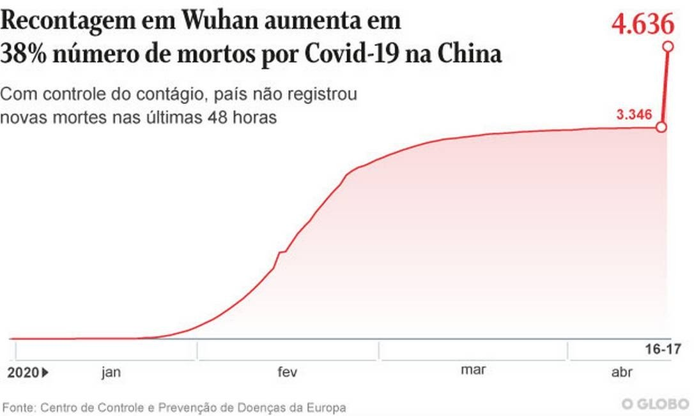
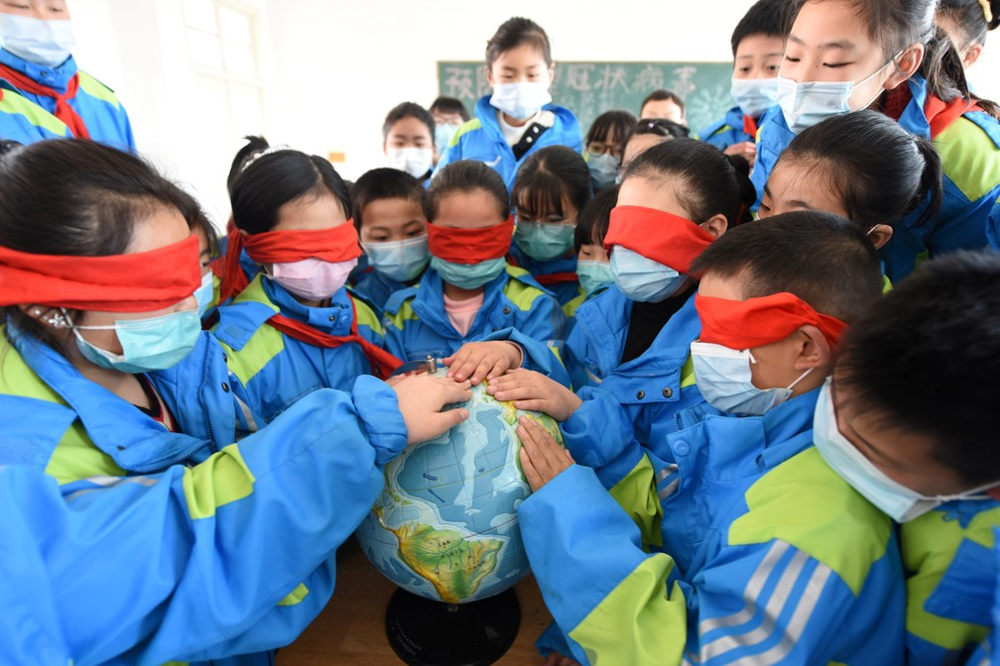

China
ChinaFidelity: High
In April, the reopening of China's fresh produce markets, known as wet markets is a source of increasing international pressure. This is because researchers of the new coronavirus believe that one of these sites, specifically the city of Wuhan, was the starting point of the pandemic. In addition to vegetables, fruits and vegetables, these fairs also sell meat and live animals, including wild species. These critters carry pathogens that can eventually migrate to humans. In the case of Covid-19, the most likely hypothesis is that the coronavirus came from pangolins, a small mammal, or bats.
Source: Veja - 21/04/2020
Fidelity: High
WUHAN, China — The Chinese city of Wuhan, birthplace of Covid-19, revised its official casualty count this Friday fatal from the disease, adding another 1,290 deaths to the initial count, a 50% increase. The recount, that according to authorities corrects "lapses" in counting cases at the beginning of the pandemic, came amid questions reports on China's data and speculation that it could have covered it up — something Beijing vehemently denies.
With the newly released data, the total death toll from Covid-19 in Wuhan, capital of Hubei province, went from 2,579 to 3,869. This caused the number of deaths recorded in mainland China to rise from 3,346 to 4,636, an increase of almost 40%. In addition to retroactive data, the country has not registered any new deaths due to the coronavirus in the last 24 hours.
Source : Globo - 17/04/2020
Fidelity: Low
A province in northwestern China that is at the forefront of the country's battle against the coronavirus reported this Tuesday (21) its first cases in nearly three weeks, all involving travelers from abroad, while imported infections began to stabilize elsewhere.
Like other countries hit by the pandemic, China has imposed strict restrictions on newcomers, such as mandatory quarantine, in addition to reducing international flights and limiting the entry of foreigners, including business travelers.
Source : Globo - 21/04/2020
(Swipe over the chart to see each day's cases)